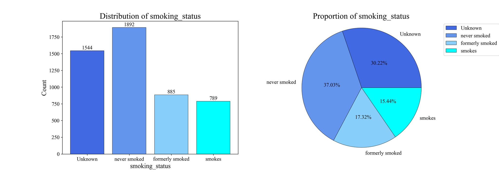

前言：背景與動機¶
背景¶
隨著年齡增長，罹患腦中風、缺血性心臟病與癌症的風險也越高，亦為1990年以來WHO統計已開發國家的前三大死因[18b]，2016年全球的中風病患高達八千萬人，其中近一千四百萬人為新增病例，同年有550萬人死於中風，為全球第二大死因[JNR+19]，其中75%來自、低收入國家[Col18]，過去十年來(4/6止，衛服部公布至2019，每年國人十大死因)一直列在臺灣國人十大死因的前五名[18a,20]。
中風、或是腦中風(stroke, cerebrovasular accident)，在衛生福利部上，我們又可以看到另一個稱呼「腦血管疾病」。當腦部血管受到阻塞或破裂，腦部細胞欠缺血液的運輸而導致缺氧，細胞進而損傷或死亡，便稱之為腦中風[JOOS16]。罹患中風後，可能需要面對許多併發症，包含肌肉能力喪失，部分癱瘓、吞嚥困難，中樞神經系統大腦上則有記憶喪失、思覺異常、癲癇等等[LSR+00,KSC10]，其中又有1/3的患者在癒後仍會伴隨這些後遺症[Org21]。
除了高死亡率，國家亦需要付出大量的醫療成本，對中風患者進行治療與病後照護，近數十年，腦中風對於全球各國均是不可忽視的問題。
動機¶
腦中風已被證實與血壓、糖尿病(肥胖)、年齡密切相關[BEE17]，而後兩者又可能導致高血壓，因此光探討糖尿病與肥胖，可能就已經足以涵蓋血壓所造成的影響力。故，本次報告除了想要再次證實已知的腦中風與其他病史已知的關係，我們想要瞭解，當不考慮糖尿病史與年齡時，生活環境對血壓與腦中風所造成的關係。
目標與研究流程:¶
目標: 找出與中風最相關的解釋變數¶
研究流程:¶
首先透過列聯表分析瞭解變數之間的大致交互作用，並篩選迴歸分析適合的解釋變數
「列聯表分析:簡單類別型」 - 「列聯表分析:綜合結論」
利用迴歸分析建立出統計模型
「迴歸分析: 類別型變數」 - 「迴歸分析: 綜合模型」
最後以cluster analysis來獨立探討較容易中風的族群與因素，再次驗證前面的分析結果
「Cluster analysis: 測試與中風組內分群」 - 「Cluster analysis: 中風者與非中風者做分群」
Math Equation Test¶
資料探討¶
資料來源¶
我們選擇了一筆2018年釋出的網路資料
資料清理¶
我們將符合以下條件的資料清掉
Gender為Other
BMI為N/A
Smoking status為Unknown
資料基本型態¶
資料總數: 3425個人 (清理前為5110)
類別型: gender, hypertension, heart_disease, ever_married, work_type, Residence_type, smoking_status, stroke
數值型: age, avg_glucose_level, bmi

單變數分析: 數值型¶


資料綜觀¶

註: 以上資料在類別變數分析中，均會依據狀況刪去部分資料，因此各項初步分析中的資料數可能不盡一致。但在分群分析與迴歸分析中，若有任一欄為「unknown」、「N/A」、或「null」，該筆資料會整筆刪除，採用內容一致的資料集。
列聯表分析1:簡單類別型¶
列聯表分析的第一部份，會針對五個簡單類別變數做Two-by-two table的分析。簡單類別型變數只有兩個值，例如: 有高血壓就是1，沒高血壓就是0，也因此Two-by-two table跟Odds Ratio適合分析這種變數與中風的關係。
A. 中風與性別¶

Two-by-two table¶

Odds Ratio:¶
\(\hat{\theta}=1.119\)
95% Confidence Interval of \(\log{(\hat{\theta})}=(-0.192, 0.417)\)
上面的信賴區間包含0，表示對於性別與中風，未有證據支持具有相關性
雖然相關沒有統計顯著，但由上方的Bar圖，可以知道在這組資料中，如果已知是男生，那中風的機率是稍微高一點的
B. 中風與居住環境¶

Two-by-two table¶

Odds Ratio:¶
\(\hat{\theta}=0.948\)
95% Confidence Interval of \(\log{(\hat{\theta})}=(-0.354, 0.247)\)
95%的信賴區間包含0，表示住在城市與鄉下與中風並無相關性
由上方的Bar圖的條件機率，也顯示住在城市與鄉下得到中風的機率是類似的
C. 中風與高血壓¶

Two-by-two table¶
Odds Ratio:¶
\(\hat{\theta}=3.821\)
95% Confidence Interval of \(\log{(\hat{\theta})}=(1.007, 1.673)\)
95%的信賴區間不包含0，表示 \(\log{(\hat{\theta})}\) 與0有顯著差異
表示中風與高血壓是顯著相關的
由上方Bar圖，在高血壓患者中，中風的機率是0.14。然而，在非高血壓的人中，中風的機率是0.04。可以知道，有高血壓的人比沒有高血壓的人容易中風。
Chi-square:¶
\(\chi^2\) = 81.605, df = 1, p-value < 2.2e-16
高血壓與中風的在本檢定中顯示具有高度相關性，如同odds ratio所顯示，進一步分析殘差了解其分布：
>round(result_StrokeHyper$residuals, 3)
hypertension |
Normal |
|
|---|---|---|
Stroke |
8.472 |
-2.784 |
Non-stroke |
-1.917 |
0.630 |
高血壓與中風的發生有高度相關性，殘差顯示血壓正常者與高血壓者在中風條件下有最大的差異
D. 中風與心臟病¶

Two-by-two table¶

Odds Ratio:¶
\(\hat{\theta}=4.522\)
95% Confidence Interval of \(\log{(\hat{\theta})}=(1.112, 1.905)\)
95%的信賴區間不包含0，表示 \(\log{(\hat{\theta})}\) 與0有顯著差異。
表示中風與心臟病是顯著相關的
由上方Bar圖，在心臟病患者中，中風的機率是0.175。然而，在非心臟病患者中，中風的機率是0.045。可以知道，有心臟病的人比沒有心臟病的人容易中風。
Chi-square:¶
\(\chi^2\) = 90.26, df = 1, p-value < 2.2e-16
心臟病與中風的在本檢定中顯示具有高度相關性，如同odds ratio所顯示，進一步分析殘差瞭解其分布：
>round(result_StrokeHD$residuals, 3)
heart D |
Normal |
|
|---|---|---|
Stroke |
9.149 |
-2.186 |
Non-stroke |
-2.071 |
0.495 |
心臟病與中風的發生有高度相關性，殘差與\(\chi^2\): 顯示心臟病患者與中風的關聯性甚至比高血壓之於中風要高。
E. 中風與婚姻¶

Odds Ratio:¶
\(\hat{\theta}=2.644\)
95% Confidence Interval of \(\log{(\hat{\theta})}=(0.501, 1.444)\)
95%的信賴區間不包含0，表示 \(\log{(\hat{\theta})}\) 與0有顯著差異。
表示中風與婚姻狀態是顯著相關的
我們一開始認為婚姻不應該跟中風有關聯，上方Bar圖告訴我們有結過婚的人比較容易中風
在後續的分析，我們會發現婚姻帶有年齡的資訊。換句話說，婚姻與中風關聯背後的Confounding factor是年齡
Chi-square:¶
\(\chi^2\) = 21.4, df = 1, p-value = 3.728e-06
婚姻經驗與中風的在本檢定中顯示具有相關性，如同odds ratio所顯示，進一步分析殘差瞭解其分布：
round(result_StrokeMarri$residuals, 3)
Married |
NevMar |
|
|---|---|---|
Stroke |
2.201 |
-4.004 |
Non-stroke |
-0.539 |
0.980 |
發現未曾有婚姻經驗者，較不容易中風
綜合比較¶

我們把這五個簡單變數的Odds Ratio 畫在一起做比較，如上圖。
與中風不相關的變數: 性別與居住地
與中風相關的三個變數: 婚姻、高血壓、心臟病
婚姻與中風相關是比較意外的結果，下面會做年齡與婚姻相關的分析，就可以知道婚姻是帶有年齡的資訊的。
列聯表分析2:多重類別型¶
A. 中風與抽煙習慣¶

Contingency table¶

Chi-square:¶
\(\chi^2\) = 6.03, df=2, p-value=4.906e-02
p-value\(<\)0.05，顯示抽煙狀態與中風具有高度相關性
由Contingency Table的期望值可以發現，造成統計顯著性的是”Never smoke”與”Formerly Smoke”
Never Smoke的觀測值比期望值低，表示不抽煙者中風的機率較低
Formerly Smoke的觀測值比期望值高，表示戒煙者中風的機率提高
Bar圖也指出，Formerly Smoke的中風機率是最高的。這個結果讓我們懷疑戒煙者是不是也隱含著年齡比較大的資訊，這在後續的分析會一併討論
B. 中風與工作¶
工作的分佈與比例¶

在這筆資料中，私人企業工作佔了64%，self-employed的人佔了18%，政府機關工作的人佔了15%，剩下的則是不曾工作者與小孩
我們會在下面的Contigency Table跟卡方分析把”孩童”與”未曾工作”的資料點清理掉
Contingency table¶

Chi-square:¶
\(\chi^2\) = 7.87, df=2, p-value=1.959e-02
p-value \(<\) 0.05，顯示工作與中風具有高度相關性
在私人企業與政府單位工作的人的中風觀測值都比中風期望值低。然而，對於自己開業的人，中風的觀測值比期望值高。從右方條件機率的Bar圖也顯示自己開業的人中風的機率最高
我們猜測背後的原因是，自行創業的壓力比領人薪水的壓力大，以致於中風的機率高


解釋變數與中風的交互作用¶


迴歸分析1: 類別型變數¶
由於列聯表分析只能探討中風與一種解釋變數之間的關係，迴歸分析則可以提供我們一次分析多種解釋變數對於中風的影響。 在這個部份，我們首先做了只有類別型變數的迴歸模型，下一個部份則做了只有數值型變數的迴歸模型，第三部份結合了所有的變數並做出一個最終模型。
從前面列聯表分析中: 中風與”性別”及”住處型態”無關，因此在迴歸分析是直接被拿掉的
讀取資料¶
strokedata <- read.csv(file = '../data/healthcare-dataset-stroke-data-cleanbmi.csv')
head(strokedata)
| age | hypertension | heart_disease | ever_married | work_type | avg_glucose_level | bmi | smoking_status | stroke |
|---|---|---|---|---|---|---|---|---|
| 67 | 0 | 1 | Yes | Private | 228.69 | 36.6 | formerly smoked | 1 |
| 80 | 0 | 1 | Yes | Private | 105.92 | 32.5 | never smoked | 1 |
| 49 | 0 | 0 | Yes | Private | 171.23 | 34.4 | smokes | 1 |
| 79 | 1 | 0 | Yes | Self-employed | 174.12 | 24.0 | never smoked | 1 |
| 81 | 0 | 0 | Yes | Private | 186.21 | 29.0 | formerly smoked | 1 |
| 74 | 1 | 1 | Yes | Private | 70.09 | 27.4 | never smoked | 1 |
被清理的資料是符合以下條件的:
Gender為Other
BMI為N/A
Smoking status為Unknown
清理完的資料含有3425資料點
nrow(strokedata)
Simple Models: 只含有一個解釋變數¶
高血壓:¶
model_hypert = glm(stroke ~ hypertension, data=strokedata, family=binomial(link="logit"))
summary(model_hypert)
Call:
glm(formula = stroke ~ hypertension, family = binomial(link = "logit"),
data = strokedata)
Deviance Residuals:
Min 1Q Median 3Q Max
-0.5486 -0.2885 -0.2885 -0.2885 2.5298
Coefficients:
Estimate Std. Error z value Pr(>|z|)
(Intercept) -3.15821 0.09206 -34.305 < 2e-16 ***
hypertension 1.34048 0.16991 7.889 3.04e-15 ***
---
Signif. codes: 0 ‘***’ 0.001 ‘**’ 0.01 ‘*’ 0.05 ‘.’ 0.1 ‘ ’ 1
(Dispersion parameter for binomial family taken to be 1)
Null deviance: 1410.9 on 3424 degrees of freedom
Residual deviance: 1358.1 on 3423 degrees of freedom
AIC: 1362.1
Number of Fisher Scoring iterations: 6
\(\beta\)的z-test的p-value很小，高血壓與中風的預測是顯著的
\(\beta_{\rm{hypert}}=1.34 > 0\) : 表示有高血壓會增加中風的機率
心臟病¶
model_heartd = glm(stroke ~ heart_disease, data=strokedata, family=binomial(link="logit"))
summary(model_heartd)
Call:
glm(formula = stroke ~ heart_disease, family = binomial(link = "logit"),
data = strokedata)
Deviance Residuals:
Min 1Q Median 3Q Max
-0.6198 -0.3025 -0.3025 -0.3025 2.4928
Coefficients:
Estimate Std. Error z value Pr(>|z|)
(Intercept) -3.06125 0.08525 -35.908 < 2e-16 ***
heart_disease 1.50897 0.20231 7.459 8.73e-14 ***
---
Signif. codes: 0 ‘***’ 0.001 ‘**’ 0.01 ‘*’ 0.05 ‘.’ 0.1 ‘ ’ 1
(Dispersion parameter for binomial family taken to be 1)
Null deviance: 1410.9 on 3424 degrees of freedom
Residual deviance: 1367.2 on 3423 degrees of freedom
AIC: 1371.2
Number of Fisher Scoring iterations: 5
\(\beta\)的z-test的p-value很小，心臟病與中風的預測是顯著的
\(\beta_{\rm{heartd}}=1.509 > 0\) : 表示有心臟病會增加中風的機率
Ever-Married(結婚有無)¶
model_marry = glm(stroke ~ ever_married, data=strokedata, family=binomial(link="logit"))
summary(model_marry)
Call:
glm(formula = stroke ~ ever_married, family = binomial(link = "logit"),
data = strokedata)
Deviance Residuals:
Min 1Q Median 3Q Max
-0.3565 -0.3565 -0.3565 -0.2214 2.7279
Coefficients:
Estimate Std. Error z value Pr(>|z|)
(Intercept) -3.6964 0.2264 -16.33 < 2e-16 ***
ever_marriedYes 0.9722 0.2406 4.04 5.34e-05 ***
---
Signif. codes: 0 ‘***’ 0.001 ‘**’ 0.01 ‘*’ 0.05 ‘.’ 0.1 ‘ ’ 1
(Dispersion parameter for binomial family taken to be 1)
Null deviance: 1410.9 on 3424 degrees of freedom
Residual deviance: 1390.4 on 3423 degrees of freedom
AIC: 1394.4
Number of Fisher Scoring iterations: 6
\(\beta_{\rm{marry}}=0.9722 > 0\) : 表示”有結過婚”會增加中風的機率
目前這裡的資料是含有”未達已婚年齡者的”，我們會在後面討論年齡與婚姻的對於中風預測的相互影響
Work-type(工作類型)¶
Baseline group: children
model_worktype = glm(stroke ~ work_type, data=strokedata, family=binomial(link="logit"))
summary(model_worktype)
Call:
glm(formula = stroke ~ work_type, family = binomial(link = "logit"),
data = strokedata)
Deviance Residuals:
Min 1Q Median 3Q Max
-0.3985 -0.3188 -0.3188 -0.3188 2.4927
Coefficients:
Estimate Std. Error z value Pr(>|z|)
(Intercept) -1.757e+01 4.798e+02 -0.037 0.971
work_typeGovt_job 1.451e+01 4.798e+02 0.030 0.976
work_typeNever_worked -1.793e-08 1.161e+03 0.000 1.000
work_typePrivate 1.461e+01 4.798e+02 0.030 0.976
work_typeSelf-employed 1.507e+01 4.798e+02 0.031 0.975
(Dispersion parameter for binomial family taken to be 1)
Null deviance: 1410.9 on 3424 degrees of freedom
Residual deviance: 1394.7 on 3420 degrees of freedom
AIC: 1404.7
Number of Fisher Scoring iterations: 16
z-test的p-value都很大，表示我們沒辦法拒絕下面的\(H_0\)
因此，工作型態對於預測中風是沒有幫助的，後面的模型不會考慮此解釋變數
Smoke Status(沒抽過煙、戒煙的人、正在抽煙的人)¶
Baseline group: ‘never smoked’
strokedata$smoking_status <- factor(strokedata$smoking_status, levels= c('never smoked', 'formerly smoked', 'smokes'))
model_smoke = glm(stroke ~ smoking_status, data=strokedata, family=binomial(link="logit"))
summary(model_smoke)
Call:
glm(formula = stroke ~ smoking_status, family = binomial(link = "logit"),
data = strokedata)
Deviance Residuals:
Min 1Q Median 3Q Max
-0.3758 -0.3297 -0.3047 -0.3047 2.4872
Coefficients:
Estimate Std. Error z value Pr(>|z|)
(Intercept) -3.0468 0.1117 -27.287 <2e-16 ***
smoking_statusformerly smoked 0.4318 0.1769 2.441 0.0146 *
smoking_statussmokes 0.1621 0.1988 0.815 0.4149
---
Signif. codes: 0 ‘***’ 0.001 ‘**’ 0.01 ‘*’ 0.05 ‘.’ 0.1 ‘ ’ 1
(Dispersion parameter for binomial family taken to be 1)
Null deviance: 1410.9 on 3424 degrees of freedom
Residual deviance: 1405.1 on 3422 degrees of freedom
AIC: 1411.1
Number of Fisher Scoring iterations: 5
\(\beta_{\rm{Former-smoke}}>0\), \(\beta_{\rm{smoke}}>0\): 相比於不抽煙的人(Baseline)，有抽過煙會增加中風的機率
\(\beta_{\rm{Former-smoke}}>\beta_{\rm{smoke}}\): 這裡是比較違反直覺的地方，”戒煙的人”竟然比”目前還在抽煙的人”更容易中風
\(\beta_{\rm{smoke}}\) Z-test的p-value=0.4149: 表示抽煙狀態對於預測中風，沒有前面幾個變數來的重要
Model Selection: with/without smoke status¶
為了決定是否要將smoke status考慮進去最後的模型，我們用likelihood-ratio test做Model Selection
Full Model: $\( \log{\left(\frac{P[\rm{stroke}=1]}{P[\rm{stroke}=0]}\right)} = \beta_0 + \beta_{\rm{hypert}}x_{\rm{hypert}}+ \beta_{\rm{heartd}}x_{\rm{heartd}}+ \beta_{\rm{marry}}x_{\rm{marry}} + \beta_{\rm{Former-smoke}}x_{\rm{Former-smoke}} + \beta_{\rm{smoke}}x_{\rm{smoke}} \)$
Reduced Model: $\( \log{\left(\frac{P[\rm{stroke}=1]}{P[\rm{stroke}=0]}\right)} = \beta_0 + \beta_{\rm{hypert}}x_{\rm{hypert}}+ \beta_{\rm{heartd}}x_{\rm{heartd}}+ \beta_{\rm{marry}}x_{\rm{marry}} \)$
model_full = glm(stroke ~ hypertension + heart_disease + ever_married + smoking_status, data=strokedata, family=binomial(link="logit"))
summary(model_full)
Call:
glm(formula = stroke ~ hypertension + heart_disease + ever_married +
smoking_status, family = binomial(link = "logit"), data = strokedata)
Deviance Residuals:
Min 1Q Median 3Q Max
-0.9457 -0.3195 -0.2799 -0.2228 2.8188
Coefficients:
Estimate Std. Error z value Pr(>|z|)
(Intercept) -3.9539 0.2399 -16.479 < 2e-16 ***
hypertension 1.1381 0.1748 6.510 7.52e-11 ***
heart_disease 1.2388 0.2099 5.902 3.60e-09 ***
ever_marriedYes 0.7338 0.2451 2.994 0.00275 **
smoking_statusformerly smoked 0.2704 0.1824 1.482 0.13822
smoking_statussmokes 0.0779 0.2036 0.383 0.70202
---
Signif. codes: 0 ‘***’ 0.001 ‘**’ 0.01 ‘*’ 0.05 ‘.’ 0.1 ‘ ’ 1
(Dispersion parameter for binomial family taken to be 1)
Null deviance: 1410.9 on 3424 degrees of freedom
Residual deviance: 1311.8 on 3419 degrees of freedom
AIC: 1323.8
Number of Fisher Scoring iterations: 6
model_reduce = glm(stroke ~ hypertension + heart_disease + ever_married, data=strokedata, family=binomial(link="logit"))
summary(model_reduce)
Call:
glm(formula = stroke ~ hypertension + heart_disease + ever_married,
family = binomial(link = "logit"), data = strokedata)
Deviance Residuals:
Min 1Q Median 3Q Max
-0.8899 -0.2930 -0.2930 -0.2013 2.7961
Coefficients:
Estimate Std. Error z value Pr(>|z|)
(Intercept) -3.8888 0.2308 -16.852 < 2e-16 ***
hypertension 1.1373 0.1746 6.513 7.37e-11 ***
heart_disease 1.2674 0.2085 6.080 1.20e-09 ***
ever_marriedYes 0.7621 0.2443 3.120 0.00181 **
---
Signif. codes: 0 ‘***’ 0.001 ‘**’ 0.01 ‘*’ 0.05 ‘.’ 0.1 ‘ ’ 1
(Dispersion parameter for binomial family taken to be 1)
Null deviance: 1410.9 on 3424 degrees of freedom
Residual deviance: 1313.9 on 3421 degrees of freedom
AIC: 1321.9
Number of Fisher Scoring iterations: 6
Likelihood-Ratio Test¶
Full Model與Reduced Model的差異可以轉換成 \(H_0: \beta_{\rm{Former-smoke}} = \beta_{\rm{smoke}}= 0\)
anova(model_reduce, model_full, test="LRT")
| Resid. Df | Resid. Dev | Df | Deviance | Pr(>Chi) |
|---|---|---|---|---|
| 3421 | 1313.945 | NA | NA | NA |
| 3419 | 1311.770 | 2 | 2.175009 | 0.3370566 |
根據Deviance的p-value=0.3370
不能拒絕 \(H_0\)，所以Final Model將不考慮”抽煙狀態”的變數
Final Model¶
summary(model_reduce)
Call:
glm(formula = stroke ~ hypertension + heart_disease + ever_married,
family = binomial(link = "logit"), data = strokedata)
Deviance Residuals:
Min 1Q Median 3Q Max
-0.8899 -0.2930 -0.2930 -0.2013 2.7961
Coefficients:
Estimate Std. Error z value Pr(>|z|)
(Intercept) -3.8888 0.2308 -16.852 < 2e-16 ***
hypertension 1.1373 0.1746 6.513 7.37e-11 ***
heart_disease 1.2674 0.2085 6.080 1.20e-09 ***
ever_marriedYes 0.7621 0.2443 3.120 0.00181 **
---
Signif. codes: 0 ‘***’ 0.001 ‘**’ 0.01 ‘*’ 0.05 ‘.’ 0.1 ‘ ’ 1
(Dispersion parameter for binomial family taken to be 1)
Null deviance: 1410.9 on 3424 degrees of freedom
Residual deviance: 1313.9 on 3421 degrees of freedom
AIC: 1321.9
Number of Fisher Scoring iterations: 6
模型解釋:¶
由於這三個解釋變數都是類別型，我們可以用final model來探討不同的狀況
例如: 最左邊的藍色點，代表的是 “沒有結婚” “沒有高血壓” “沒有心臟病”的中風機率，可以看到非常的低。

\(\beta_{\rm{heartd}} > \beta_{\rm{hypert}} > \beta_{\rm{marry}}>0\)
“有高血壓”、”有心臟疾病”與”有結過婚”都會增加中風機率。如上圖最右邊灰色的點，三種狀況都有，擁有最高的中風機率
有心臟病的影響是最大的，其次是高血壓，最後是結婚狀態
迴歸分析2: 數值型變數¶
在迴歸分析的第二部份，我們將專注的探討三個數值型變數:年齡、血糖、BMI。主要的目的是了解這三個變數中哪些對中風的預測是重要的。
讀取資料¶
strokedata <- read.csv(file = '../data/healthcare-dataset-stroke-data-cleanbmi.csv')
head(strokedata)
| age | hypertension | heart_disease | ever_married | work_type | avg_glucose_level | bmi | smoking_status | stroke |
|---|---|---|---|---|---|---|---|---|
| 67 | 0 | 1 | Yes | Private | 228.69 | 36.6 | formerly smoked | 1 |
| 80 | 0 | 1 | Yes | Private | 105.92 | 32.5 | never smoked | 1 |
| 49 | 0 | 0 | Yes | Private | 171.23 | 34.4 | smokes | 1 |
| 79 | 1 | 0 | Yes | Self-employed | 174.12 | 24.0 | never smoked | 1 |
| 81 | 0 | 0 | Yes | Private | 186.21 | 29.0 | formerly smoked | 1 |
| 74 | 1 | 1 | Yes | Private | 70.09 | 27.4 | never smoked | 1 |
Simple Models: 只含有一個解釋變數¶
Age(年齡)¶
model_age = glm(stroke ~ age, data=strokedata, family=binomial(link="logit"))
summary(model_age)
Call:
glm(formula = stroke ~ age, family = binomial(link = "logit"),
data = strokedata)
Deviance Residuals:
Min 1Q Median 3Q Max
-0.7433 -0.3532 -0.2094 -0.1101 3.1488
Coefficients:
Estimate Std. Error z value Pr(>|z|)
(Intercept) -7.386079 0.413419 -17.87 <2e-16 ***
age 0.076109 0.006051 12.58 <2e-16 ***
---
Signif. codes: 0 ‘***’ 0.001 ‘**’ 0.01 ‘*’ 0.05 ‘.’ 0.1 ‘ ’ 1
(Dispersion parameter for binomial family taken to be 1)
Null deviance: 1410.9 on 3424 degrees of freedom
Residual deviance: 1180.3 on 3423 degrees of freedom
AIC: 1184.3
Number of Fisher Scoring iterations: 7
\(\beta\)的z-test的p-value很小，年紀對中風的預測是顯著的
\(\beta_{\rm{age}}=0.076 > 0\) : 年紀增加，中風的機率也會提升
下圖藍色線是上述模型的圖像化，可以看到大約過了六十歲，中風的機率開始快速地增高

Average Glucose Level(血糖)¶
model_glucose = glm(stroke ~ avg_glucose_level, data=strokedata, family=binomial(link="logit"))
summary(model_glucose)
Call:
glm(formula = stroke ~ avg_glucose_level, family = binomial(link = "logit"),
data = strokedata)
Deviance Residuals:
Min 1Q Median 3Q Max
-0.6637 -0.3162 -0.2829 -0.2614 2.6723
Coefficients:
Estimate Std. Error z value Pr(>|z|)
(Intercept) -4.109552 0.188746 -21.773 < 2e-16 ***
avg_glucose_level 0.010116 0.001286 7.868 3.6e-15 ***
---
Signif. codes: 0 ‘***’ 0.001 ‘**’ 0.01 ‘*’ 0.05 ‘.’ 0.1 ‘ ’ 1
(Dispersion parameter for binomial family taken to be 1)
Null deviance: 1410.9 on 3424 degrees of freedom
Residual deviance: 1355.3 on 3423 degrees of freedom
AIC: 1359.3
Number of Fisher Scoring iterations: 6
\(\beta\)的z-test的p-value很小，血糖對中風的預測是顯著的
\(\beta_{\rm{glucose}}=0.01 > 0\) : 血糖增加，中風的機率也會提升
下圖藍色線是上述模型的圖像化。隨著血糖增加，中風機率會增加。相比於年紀，增加的斜率比較小。表示血糖相對於年紀對於中風的影響性比較小。

BMI(身體質量指數)¶
model_bmi = glm(stroke ~ bmi, data=strokedata, family=binomial(link="logit"))
summary(model_bmi)
Call:
glm(formula = stroke ~ bmi, family = binomial(link = "logit"),
data = strokedata)
Deviance Residuals:
Min 1Q Median 3Q Max
-0.4039 -0.3322 -0.3266 -0.3221 2.4638
Coefficients:
Estimate Std. Error z value Pr(>|z|)
(Intercept) -3.103070 0.321963 -9.638 <2e-16 ***
bmi 0.006932 0.010210 0.679 0.497
---
Signif. codes: 0 ‘***’ 0.001 ‘**’ 0.01 ‘*’ 0.05 ‘.’ 0.1 ‘ ’ 1
(Dispersion parameter for binomial family taken to be 1)
Null deviance: 1410.9 on 3424 degrees of freedom
Residual deviance: 1410.4 on 3423 degrees of freedom
AIC: 1414.4
Number of Fisher Scoring iterations: 5
\(\beta_{\rm{glucose}}=0.006 > 0\) : BMI增加，中風的機率也會提升
\(\beta\)的z-test的p-value很大，BMI對中風的預測是不顯著的，我們因此在Final Model不考慮此變數
下圖藍色線是上述模型的圖像化。隨著BMI增加，中風機率非常緩慢的增加
Final Model:¶
由上述簡單模型的分析，最終模型為
final_model = glm(stroke ~ age + avg_glucose_level, data=strokedata, family=binomial(link="logit"))
summary(final_model)
Call:
glm(formula = stroke ~ age + avg_glucose_level, family = binomial(link = "logit"),
data = strokedata)
Deviance Residuals:
Min 1Q Median 3Q Max
-0.9513 -0.3432 -0.1975 -0.1068 3.1971
Coefficients:
Estimate Std. Error z value Pr(>|z|)
(Intercept) -7.845280 0.434300 -18.06 < 2e-16 ***
age 0.072699 0.006177 11.77 < 2e-16 ***
avg_glucose_level 0.005443 0.001311 4.15 3.32e-05 ***
---
Signif. codes: 0 ‘***’ 0.001 ‘**’ 0.01 ‘*’ 0.05 ‘.’ 0.1 ‘ ’ 1
(Dispersion parameter for binomial family taken to be 1)
Null deviance: 1410.9 on 3424 degrees of freedom
Residual deviance: 1163.8 on 3422 degrees of freedom
AIC: 1169.8
Number of Fisher Scoring iterations: 7
\(\beta_{\rm{age}} > \beta_{\rm{glucose}} > 0\)
年齡相較於血糖，對於中風機率的影響是比較大的
迴歸分析3: 綜合模型¶
在迴歸分析的第三部份，我們結合了前兩部份的模型。
讀取資料¶
strokedata <- read.csv(file = '../data/healthcare-dataset-stroke-data-cleanbmi.csv')
head(strokedata)
| age | hypertension | heart_disease | ever_married | work_type | avg_glucose_level | bmi | smoking_status | stroke |
|---|---|---|---|---|---|---|---|---|
| 67 | 0 | 1 | Yes | Private | 228.69 | 36.6 | formerly smoked | 1 |
| 80 | 0 | 1 | Yes | Private | 105.92 | 32.5 | never smoked | 1 |
| 49 | 0 | 0 | Yes | Private | 171.23 | 34.4 | smokes | 1 |
| 79 | 1 | 0 | Yes | Self-employed | 174.12 | 24.0 | never smoked | 1 |
| 81 | 0 | 0 | Yes | Private | 186.21 | 29.0 | formerly smoked | 1 |
| 74 | 1 | 1 | Yes | Private | 70.09 | 27.4 | never smoked | 1 |
Model 1: Categorical + Numerical¶
在類別型的分析中: 高血壓、心臟病與結婚狀態
在數值型的分析中: 年齡、血糖
因此，我們提出了以下的模型
model1 = glm(stroke ~ hypertension + heart_disease + ever_married + age + avg_glucose_level, data=strokedata, family=binomial(link="logit"))
summary(model1)
Call:
glm(formula = stroke ~ hypertension + heart_disease + ever_married +
age + avg_glucose_level, family = binomial(link = "logit"),
data = strokedata)
Deviance Residuals:
Min 1Q Median 3Q Max
-1.2018 -0.3344 -0.1915 -0.1090 3.2072
Coefficients:
Estimate Std. Error z value Pr(>|z|)
(Intercept) -7.526184 0.470428 -15.999 < 2e-16 ***
hypertension 0.567110 0.181509 3.124 0.001782 **
heart_disease 0.449095 0.216933 2.070 0.038433 *
ever_marriedYes -0.153133 0.260976 -0.587 0.557358
age 0.068184 0.006361 10.720 < 2e-16 ***
avg_glucose_level 0.004733 0.001336 3.542 0.000398 ***
---
Signif. codes: 0 ‘***’ 0.001 ‘**’ 0.01 ‘*’ 0.05 ‘.’ 0.1 ‘ ’ 1
(Dispersion parameter for binomial family taken to be 1)
Null deviance: 1410.9 on 3424 degrees of freedom
Residual deviance: 1149.6 on 3419 degrees of freedom
AIC: 1161.6
Number of Fisher Scoring iterations: 7
高血壓、心臟病、年齡、血糖的\(\beta\)都大於零，表示這幾個因素都是中風的負面因子，與前面的分析一致
\(\beta_{\rm{marry}}<0\)表示結婚會降低中風的機率，這與前面的分析矛盾。我們認為婚姻背後的confounding factor是年齡，會在下個部份討論
此外，\(\beta_{\rm{marry}}\) 的z-test p-value大，表示無法拒絕 \(H_0: \beta_{\rm{marry}} = 0\)
Model 2¶
在Model 1中，我們發現無法拒絕 \(H_0: \beta_{\rm{marry}} = 0\)，因此提出了下面的模型，並會用Deviance來比較Model 1 跟 Model 2
model2 = glm(stroke ~ hypertension + heart_disease + age + avg_glucose_level, data=strokedata, family=binomial(link="logit"))
summary(model2)
Call:
glm(formula = stroke ~ hypertension + heart_disease + age + avg_glucose_level,
family = binomial(link = "logit"), data = strokedata)
Deviance Residuals:
Min 1Q Median 3Q Max
-1.1420 -0.3358 -0.1927 -0.1074 3.1975
Coefficients:
Estimate Std. Error z value Pr(>|z|)
(Intercept) -7.632239 0.439507 -17.365 < 2e-16 ***
hypertension 0.568359 0.181384 3.133 0.001728 **
heart_disease 0.453716 0.216659 2.094 0.036247 *
age 0.067765 0.006359 10.656 < 2e-16 ***
avg_glucose_level 0.004701 0.001334 3.524 0.000425 ***
---
Signif. codes: 0 ‘***’ 0.001 ‘**’ 0.01 ‘*’ 0.05 ‘.’ 0.1 ‘ ’ 1
(Dispersion parameter for binomial family taken to be 1)
Null deviance: 1410.9 on 3424 degrees of freedom
Residual deviance: 1149.9 on 3420 degrees of freedom
AIC: 1159.9
Number of Fisher Scoring iterations: 7
Likelihood-Ratio Test¶
Full Model與Reduced Model的差異可以轉換成 \(H_0: \beta_{\rm{marry}} = 0\)
anova(model1, model2, test="LRT")
| Resid. Df | Resid. Dev | Df | Deviance | Pr(>Chi) |
|---|---|---|---|---|
| 3419 | 1149.567 | NA | NA | NA |
| 3420 | 1149.903 | -1 | -0.3352499 | 0.562584 |
根據Deviance的p-value=0.5626
不能拒絕 \(H_0\)，所以我們選擇Model 2當作Final Model
Final Model¶
summary(model2)
Call:
glm(formula = stroke ~ hypertension + heart_disease + age + avg_glucose_level,
family = binomial(link = "logit"), data = strokedata)
Deviance Residuals:
Min 1Q Median 3Q Max
-1.1420 -0.3358 -0.1927 -0.1074 3.1975
Coefficients:
Estimate Std. Error z value Pr(>|z|)
(Intercept) -7.632239 0.439507 -17.365 < 2e-16 ***
hypertension 0.568359 0.181384 3.133 0.001728 **
heart_disease 0.453716 0.216659 2.094 0.036247 *
age 0.067765 0.006359 10.656 < 2e-16 ***
avg_glucose_level 0.004701 0.001334 3.524 0.000425 ***
---
Signif. codes: 0 ‘***’ 0.001 ‘**’ 0.01 ‘*’ 0.05 ‘.’ 0.1 ‘ ’ 1
(Dispersion parameter for binomial family taken to be 1)
Null deviance: 1410.9 on 3424 degrees of freedom
Residual deviance: 1149.9 on 3420 degrees of freedom
AIC: 1159.9
Number of Fisher Scoring iterations: 7
Final Model圖像化與討論¶
以下四張圖，是我們將Final Model圖像化。四張圖對應到四組血糖(80,110,150,200)。每一張圖的橫軸是age，一張圖裏面的四條線分別對應到高血壓與心臟病的不同狀況。
年齡的影響大約是在50-60歲之後開始增加中風的機率
高血壓與心臟病的影響是差不多的。對於年紀大的人，兩者都有(紅色線)對比於兩者都沒有(藍色線)，中風的機率大概相差0.2
比較四張圖，血糖的影響沒這麼大。對於年紀大的人，血糖250對比於血糖80，中風的機率大概相差0.1


討論: 結婚狀態與年齡¶
類別型簡單模型的分析指出有結婚的人，中風的機率會提升，且顯著性高。不過，在上面的Model 1，則說有結婚的人，中風的機率會下降，而且顯著性下降很多。我們直覺上認為有結婚與沒結婚這個資訊含有年齡的資訊。
因此，我們以下面四個模型來看是哪個變數造成\(\beta_{\rm{marry}}\)變號
model_age_hypert = glm(stroke ~ ever_married + hypertension, data=strokedata, family=binomial(link="logit"))
summary(model_age_hypert)
Call:
glm(formula = stroke ~ ever_married + hypertension, family = binomial(link = "logit"),
data = strokedata)
Deviance Residuals:
Min 1Q Median 3Q Max
-0.5655 -0.3119 -0.3119 -0.2091 2.7691
Coefficients:
Estimate Std. Error z value Pr(>|z|)
(Intercept) -3.8122 0.2283 -16.695 < 2e-16 ***
ever_marriedYes 0.8133 0.2431 3.345 0.000822 ***
hypertension 1.2465 0.1714 7.271 3.58e-13 ***
---
Signif. codes: 0 ‘***’ 0.001 ‘**’ 0.01 ‘*’ 0.05 ‘.’ 0.1 ‘ ’ 1
(Dispersion parameter for binomial family taken to be 1)
Null deviance: 1410.9 on 3424 degrees of freedom
Residual deviance: 1344.7 on 3422 degrees of freedom
AIC: 1350.7
Number of Fisher Scoring iterations: 6
model_age_heartd = glm(stroke ~ ever_married + heart_disease, data=strokedata, family=binomial(link="logit"))
summary(model_age_heartd)
Call:
glm(formula = stroke ~ ever_married + heart_disease, family = binomial(link = "logit"),
data = strokedata)
Deviance Residuals:
Min 1Q Median 3Q Max
-0.6412 -0.3273 -0.3273 -0.2130 2.7560
Coefficients:
Estimate Std. Error z value Pr(>|z|)
(Intercept) -3.7752 0.2277 -16.579 < 2e-16 ***
ever_marriedYes 0.8751 0.2422 3.614 0.000302 ***
heart_disease 1.4225 0.2036 6.987 2.8e-12 ***
---
Signif. codes: 0 ‘***’ 0.001 ‘**’ 0.01 ‘*’ 0.05 ‘.’ 0.1 ‘ ’ 1
(Dispersion parameter for binomial family taken to be 1)
Null deviance: 1410.9 on 3424 degrees of freedom
Residual deviance: 1351.2 on 3422 degrees of freedom
AIC: 1357.2
Number of Fisher Scoring iterations: 6
model_age_marry = glm(stroke ~ ever_married + age, data=strokedata, family=binomial(link="logit"))
summary(model_age_marry)
Call:
glm(formula = stroke ~ ever_married + age, family = binomial(link = "logit"),
data = strokedata)
Deviance Residuals:
Min 1Q Median 3Q Max
-0.7898 -0.3501 -0.2070 -0.1125 3.1579
Coefficients:
Estimate Std. Error z value Pr(>|z|)
(Intercept) -7.27687 0.44943 -16.191 <2e-16 ***
ever_marriedYes -0.15000 0.25746 -0.583 0.56
age 0.07648 0.00605 12.642 <2e-16 ***
---
Signif. codes: 0 ‘***’ 0.001 ‘**’ 0.01 ‘*’ 0.05 ‘.’ 0.1 ‘ ’ 1
(Dispersion parameter for binomial family taken to be 1)
Null deviance: 1410.9 on 3424 degrees of freedom
Residual deviance: 1180.0 on 3422 degrees of freedom
AIC: 1186
Number of Fisher Scoring iterations: 7
model_age_glc = glm(stroke ~ ever_married + avg_glucose_level, data=strokedata, family=binomial(link="logit"))
summary(model_age_glc)
Call:
glm(formula = stroke ~ ever_married + avg_glucose_level, family = binomial(link = "logit"),
data = strokedata)
Deviance Residuals:
Min 1Q Median 3Q Max
-0.6736 -0.3292 -0.2946 -0.2381 2.8574
Coefficients:
Estimate Std. Error z value Pr(>|z|)
(Intercept) -4.685927 0.270481 -17.324 < 2e-16 ***
ever_marriedYes 0.801892 0.243289 3.296 0.000981 ***
avg_glucose_level 0.009397 0.001294 7.263 3.8e-13 ***
---
Signif. codes: 0 ‘***’ 0.001 ‘**’ 0.01 ‘*’ 0.05 ‘.’ 0.1 ‘ ’ 1
(Dispersion parameter for binomial family taken to be 1)
Null deviance: 1410.9 on 3424 degrees of freedom
Residual deviance: 1342.3 on 3422 degrees of freedom
AIC: 1348.3
Number of Fisher Scoring iterations: 6
跟我們的猜想一樣，是”年齡”造成\(\beta_{\rm{marry}}\)變號與不顯著的
所以當我們在簡單模型裡只考慮婚姻這個參數時，年齡是背後的Confounding factor
結婚的人通常年紀比較大，因此容易中風。年紀小則反之。
Cluster analysis: 測試與中風組內分群¶
資料前置處理¶


相似矩陣與距離矩陣¶
根據12章講義，我是用\(\frac{a+d}{p}\)的公式，也就是把兩個人相同的變數數量除以總變數量，在這裡總共有8個變數，所以是除以8就是兩個人之間的相似度。距離矩陣就是用1去減相似度矩陣得到的。


分析¶
Complete-linkage¶

依照Complete-linkage cluster dendrogram可大致分成五群，以下為各群的詳細抽樣內容說明：
第一群：共通點為「無心臟疾病、大於50歲、已婚、有工作、BMI異常」
第一層有兩小群：兩小群合併於第三層，一個差異在於”血糖是否正常“
(8, 1, 7): 高血壓、無心臟疾病、大於50歲、已婚、有工作、血糖正常、BMI異常、有抽煙史
(17, 5, 15): 高血壓、無心臟疾病、大於50歲、已婚、有工作、血糖異常、BMI異常、有抽煙史
第二層：(2)與(8, 1, 7)合併，一個差異在於”有無高血壓“
(2): 無高血壓、無心臟疾病、大於50歲、已婚、有工作、血糖正常、BMI異常、有抽煙史
第三層：(6)與(2, 8, 1, 7)和(17, 5, 15)合併，三個差異在於“有無高血壓”、“血糖是否正常”、“有無抽菸史”
(6): 高血壓、無心臟疾病、大於50歲、已婚、有工作、血糖正常、BMI異常、無抽煙史
第二群：共通點為「高血壓、無心臟疾病、大於50歲、已婚、有工作、血糖異常、無抽煙史」
第一層：
(3, 10): 高血壓、無心臟疾病、大於50歲、已婚、有工作、血糖異常、BMI正常、無抽煙史
第二層：(18)與(3, 10)合併，一個差異在於“BMI是否正常”
(18): 高血壓、無心臟疾病、大於50歲、已婚、有工作、血糖異常、BMI異常、無抽煙史
第三群：共通點為「無高血壓、大於50歲、已婚、有工作、血糖異常、BMI異常、有抽煙史」
第一層有兩小群：兩小群合併於第二層，一個差異在於“有無心臟疾病”
(4, 16): 無高血壓、有心臟疾病、大於50歲、已婚、有工作、血糖異常、BMI異常、有抽煙史
(20, 14, 12, 13): 無高血壓、無心臟疾病、大於50歲、已婚、有工作、血糖異常、BMI異常、有抽煙史
以上，第一、二、三群合併於第四層，共通點為「大於50歲、已婚、有工作」
第四群：共通點為「高血壓、有心臟疾病、大於50歲、未婚、有工作、BMI正常、有抽煙史」
第一層：在整體的第二層出現，一個差異在於“血糖是否異常”
(9): 高血壓、有心臟疾病、大於50歲、未婚、有工作、血糖異常、BMI正常、有抽煙
(19): 高血壓、有心臟疾病、大於50歲、未婚、有工作、血糖正常、BMI正常、有抽煙
以上，第四群與第一、二、三群合併於第五層，共通點為「大於50歲、有工作」
第五群：
第一層：只有一位
(11): 無高血壓、無心臟疾病、小於50歲、未婚、有工作、血糖正常、BMI正常、有抽煙史
全圖，第五群與第一、二、三、四群合併於第六層，共通點為「有工作」
各群的第一個決策點：
第一群中，(2)與(8, 1, 7)的決策為「是否有高血壓」
第二群中，(18)與(3, 10)的決策為「BMI是否正常」
第三群中，(4, 16)與(20, 14, 12, 13)的決策為「有無心臟疾病」
第四群中，(9)與(19)的決策為「是否有高血壓」
Average-linkage¶

在Average-linkage cluster dendrogram中，可以發現與Complete-linkage cluster dendrogram只有些微的不同。
(6)被提出到更下一層: 代表(6)、(17, 5, 15)、(2, 8, 1, 7)這三小群的最大距離相同，但在平均距離上，(6)與其他兩小群的平均距離比(17, 5, 15)和(2, 8, 1, 7)的平均距離更大。
(9, 19)也被提出到更下一層
Cluster analysis: 中風者與非中風者做分群¶
在這部份，我們從中風與非中風的樣本中各隨機抽樣10人進行分群分類，觀察前面列聯表分析與回歸分析中顯示對中風具有相關性的變數，能造成中風與非中風者的分群。在分群距離計算方法中方法中，我們一開始考慮了single linkage、complete linkage、average linkage clustering，然而，single-linkage分群結果較不顯著，complete linkage與average-linkage的結果類似，我們最後採用complete linkage完成後續分析。
中風者與非中風者各抽樣10人進行分組分析¶
隨機抽樣資料
1-10號是有中風的人，11-20號是抽樣無中風的人

原始數據

群聚樹分析：
Single-linkage cluster dendrogram

用最小距離分群的結果看起來很怪異，沒有一個分群的感覺。
Complete-linkage cluster dendrogram

由上圖可以大致分成三組：

第一群：含有9個中風者(81.8%)、2個無中風者(18.2%)，屬「高風險族群」
共通點為「大於50歲」、「已婚」、「有工作」
這組混雜了較多的抽樣，因此共通點較少。但看細一點可發現此群可以再細分為三小群。若只依照這幾個健康數據分析，當中 (1)最右邊的小群其身體狀況最差，皆為中風患者，皆有血糖異常與抽菸史 (2)中間的小群中含有一個非中風樣本，健康狀況中等，雖也皆有血糖異常與抽菸史，但全部皆無高血壓 (3)左邊的小群含有一個非中風樣本，身體狀況大部分正常，只有一個有BMI的問題
這群較特別的是涵蓋了所有有抽菸史的樣本
第二群：含有1個中風者(25%)、3個無中風者(75%)，屬「中風險族群」
共通點為「高血壓」、「大於50歲」、「有工作」、「BMI異常」、「無抽煙」
雖然這群也混雜了中風與非中風樣本，但可以發現唯一的一位中風患者被分在最外層，是這群中較不一樣的，最大距離最遠。
第三群：含有5個無中風者(100%)，屬「低風險族群」
共通點為「無高血壓」、「無心臟疾病」、「小於50歲」、「血糖正常」、「BMI正常」、「無抽菸史」
這群皆為非中風樣本，可以明顯地發現他們的身體狀況與生活型態皆較健康
綜合結果：以最大距離分群可以初略得將樣本歸類在高風險、中風險與低風險等三族群，但單以分群似乎無法作出準確的判斷是否中風
Average-linkage cluster dendrogram

與Complete-linkage cluster dendrogram比較，大部分分群結果相似：
(9)從高風險族群跑到中風險族群，但仍在較外層，因此仍然屬於中風險族群中較不健康的樣本
低風險族群的樣本都沒變
Ten Trees¶
＊抽樣方法：從中風與非中風的兩群人中，個別隨機抽樣10組不重複的10個人。
＊分群資料：每顆群聚樹含有中風與非中風各一組隨機抽樣樣本，共20人。
(1-10為有中風，11-20為沒中風)
＊分群方法：Complete-linkage cluster dendrogram
＊比例計算：同群裡去算多少比例有中風、多少比例沒中風。
例如某一個小群裡有10人(100%)，有2人中風(20%)，有8人沒中風(80%)。
＊初步結論：只有Tree1, 2, 3, 8, 9有較明顯的中風與非中風分群
Tree 1 👍¶
隨機抽樣資料：


群聚樹分析：

最外層可分為兩群：
左：含有10個中風者(76.9%)、3個無中風者(23.1%)
共通點：已婚、有工作
其他重點：92.3%大於50歲、92.3%BMI異常、84.6%有抽煙
右：含有7個無中風者(100%)
共通點：無高血壓、無心臟疾病、有工作、血糖正常
其他重點：71.4%小於50歲
綜合此組抽樣的數據，此群聚樹的分群重點為有無高血壓、有無心臟疾病、血糖是否正常。當樣本的這三項數據皆正常時，將會被準確的分到無中風風險的族群，相反的，若是有其中一項異常則會有中風的風險。另外，左群高中風風險的族群大部分大於50歲，而右群無中風風險的族群大部分小於50歲，因此認為年齡是否大於50歲也是個關鍵的變數。
Tree 2 👍¶
隨機抽樣資料：


群聚樹分析：

最外層可分為兩群：
左：含有6個中風者(85.7%)、1個無中風者(14.3%)
共通點：大於50歲、已婚、有工作、血糖異常
其他重點：71.4%BMI異常
右：含有4個中風者(30.8%)、9個無中風者(69.2%)
共通點：無心臟疾病、有工作、血糖正常
其他重點：53.8%小於50歲、92.3%BMI異常
綜合此組抽樣的數據，此群聚樹的分群重點為血糖是否異常。另外，在左群的皆大於50歲，而右群的一半以上小於50歲，因此年齡是否大於50歲似乎也是分群的潛在關鍵因素之一。
Tree 3 👍¶
隨機抽樣資料：


群聚樹分析：

最外層可分為兩群：
左：含有6個中風者(85.7%)、1個無中風者(14.3%)
共通點：大於50歲、已婚、有工作、BMI異常、有抽菸史
其他重點：57.1%有高血壓
右：含有4個中風者(30.8%)、9個無中風者(69.2%)
共通點：無心臟疾病、有工作
其他重點：92.3%無高血壓、53.8%無抽菸史
綜合此組抽樣的數據，此群聚數沒有很明顯的分群因素，但可以發現是否大於50歲、BMI是否正常、是否有抽煙史是可能影響分群的關鍵變數，因當此三者同時異常時，將會被分到具有較高比例中風者的族群。另外，在未中風較多的右群中，大部分的樣本皆無高血壓，同時也都沒有心臟疾病，因此推論是否有高血壓與是否有心臟疾病也是分群的潛在因素。
Tree 4 ☠️¶
隨機抽樣資料：


群聚樹分析：

此棵樹沒有明顯的中風與非中風分群關係
最外層可分為兩群：
左：含有2個中風者(40%)、3個無中風者(60%)
右：含有8個中風者(53.3%)、7個無中風者(46.7%)
Tree 5 ☠️¶
隨機抽樣資料：


群聚樹分析：

此棵樹沒有明顯的中風與非中風分群關係
Tree 6 ☠️¶
隨機抽樣資料：


群聚樹分析：

此棵樹沒有明顯的中風與非中風分群關係
Tree 7 ☠️¶
隨機抽樣資料：


群聚樹分析：

此棵樹沒有明顯的中風與非中風分群關係
最外層可分為兩群：
左：含有7個中風者(50%)、7個無中風者(50%)
右：含有3個中風者(50%)、3個無中風者(50%)
Tree 8 👍¶
隨機抽樣資料：


群聚樹分析：

最外層可分為兩群：
左：含有4個中風者(100%)
共通點：有高血壓、無心臟疾病、大於50歲、已婚、有工作
其他重點：75%有抽煙史
右：含有6個中風者(37.5%)、10個無中風者(62.5%)
共通點：無心臟疾病、有工作、血糖正常
其他重點：87.5%無高血壓、87.5%無抽菸史
綜合此組抽樣的數據，此群聚數的分群重點為有無高血壓、有無抽菸史，因為這兩項數據在兩群中是相對立的：在左群皆是中風者的族群中皆有高血壓且高比例有抽煙史，而在右群無中風者比例較高的族群中大部分為無高血壓且無抽菸史。
Tree 9 👍¶
隨機抽樣資料：


群聚樹分析：

最外層可分為兩群：
左：含有3個無中風者(100%)
共通點：無高血壓、無心臟疾病、小於50遂、未婚、有工作、無抽菸史
其他重點：66.7%BMI正常
右：含有10個中風者(58.8%)、7個無中風者(41.2%)
共通點：已婚、有工作
其他重點：88.2%大於50歲、64.7%BMI異常
綜合此組抽樣的數據，此群聚數沒有很明顯的分群因素，但可以發現是否大於50歲、BMI是否正常是可能影響分群的潛在因素。因左群皆為無中風族群裡的樣本皆小於50歲且高比例BMI正常，而右群中中風比例較高的族群大部分大於50歲且高比例BMI異常。
Tree 10 ☠️¶
隨機抽樣資料：


群聚樹分析：

此棵樹沒有明顯的中風與非中風分群關係
最外層可分為兩群：
左：含有2個中風者(50%)、2個無中風者(50%)
右：含有8個中風者(50%)、8個無中風者(50%)
總結論¶
這部分做了十次不重複抽樣的cluster analysis，想知道分群方法能否適用於分析此筆數據。
從結果發現此方法沒有辦法將中風與非中風準確的分成兩群，且其中只有50%的群聚樹能夠較明顯的將中風與非中風分群。但仍然可以透過分析有較明顯分群的群聚數去與迴歸分析的結果做比較。
在最終選擇的迴歸模型中，使用的變數為高血壓、心臟疾病、年齡與血糖。而在cluster analysis中，高血壓、心臟疾病、血糖、年齡、BMI、抽菸史等五個分群變數都曾出現在五顆有明顯分群的群聚樹中，其中以年齡這個變數出現的次數最多，其次為高血壓。
因此，cluster analysis雖無法準確得分開中風與非中風，但是有機會能分出像高中風風險族群或低中風風險族群的分群，且分群的關鍵因素也能與最終迴歸模型取的變數相呼應。
補充:資料清理前統計分析¶
資料基本型態¶
資料總數: 5110個人
類別型: gender, hypertension, heart_disease, ever_married, work_type, Residence_type, smoking_status, stroke
數值型: age, avg_glucose_level, bmi
單變數分析: 類別型¶
gender¶
Stroke¶
Smoking status¶
Unknown資料於使用到smoking_status的變數的類別型分析中均已剃除，值得注意的是，下面histogram紀錄所有抽菸狀態未知的資料總共1544筆，其中635筆為小於等於十六歲的樣本(虛線)，也就是說剔除的樣本約有一半屬於孩童或是青少年

Work type¶
單變數分析: 數值型¶

資料綜觀¶

補充: 因素之間交互作用¶
其他因素與心臟病的關聯¶
心臟病與性別¶
Odds Ratio¶

Odds ratio \(\hat{\theta}=2.129\)
95% Confidence Interval of \(\log{(\hat{\theta})}=(0.509, 1.002)\)
Chi-square¶
Female |
Male |
Sum |
|
|---|---|---|---|
HeartD |
113 |
162 |
206 |
Normal |
2881 |
1952 |
3112 |
Sum |
2994 |
2114 |
5108 |
gender of others were not included
\(X^2\) = 36.031, df = 1, p-value = 1.942e-09
故性別與心臟病關係並不獨立，與odds ratio結果相符
且根據residual下表顯示，女性較不容易罹患心臟疾病，男性則有較高機會罹患心臟病
round(result_cvdGender$residuals, 3)
Female
Male
HeartD
-3.796
4.517
Normal
0.905
-1.077
心臟病與居住環境¶
Odds Ratio¶

Odds ratio \(\hat{\theta}=0.973\)
95% Confidence Interval of \(\log{(\hat{\theta})}=(-0.270, 0.215)\)
Chi-square¶
以下範圍為年紀>=16之統計
Residence |
Rural |
Urban |
Sum |
|---|---|---|---|
HeartD |
134 |
141 |
275 |
normal |
2013 |
2078 |
4091 |
Sum |
2147 |
2219 |
4366 |
\(X^2\) = 0.0083308, df = 1, p-value = 0.9273
故居住地與心臟病關係並無顯著相關性，與odds ratio結果相符
若將資料涵蓋小於16歲的樣本，也可見同樣的趨勢
round(result_CVDresid$residuals, 3)
Residence
Rural
Urban
HeartD
-0.106
0.104
Normal
0.027
-0.027
心臟病與婚姻¶
Odds Ratio¶

Odds ratio \(\hat{\theta}= 4.231\)
95% Confidence Interval of \(\log{(\hat{\theta})}=(1.069, 1.816)\)
Chi-square¶
以下範圍為年紀>=16之統計
EverMarr |
Yes |
No |
Sum |
|---|---|---|---|
HeartD |
244 |
31 |
275 |
normal |
3109 |
982 |
4091 |
Sum |
206 |
3113 |
4366 |
\(X^2\) = 22.73, df = 1, p-value = 1.864e-06 -故結婚經驗有否與心臟病關係並不獨立，與odds ratio結果相符，且根據residual下表顯示，有婚姻經驗較容易罹患心臟病
round(result_cvdGender$residuals, 3)
EverMarr
Yes
No
HeartD
2.257
-4.107
Normal
-0.585
1.065
心臟病與高血壓¶
Odds Ratio¶

Odds ratio \(\hat{\theta}=3.061\)
95% Confidence Interval of \(\log{(\hat{\theta})}=(0.822, 1.415)\)
Chi-square¶
Residence |
Hyper |
Normal |
Sum |
|---|---|---|---|
HeartD |
64 |
434 |
498 |
normal |
212 |
4400 |
4612 |
Sum |
276 |
4834 |
5110 |
\(X^2\) = 58.337, df = 1, p-value = 2.209e-14
故高血壓與心臟病關係具顯著相關性，與odds ratio結果相符，且具高血壓的患者易伴隨有心臟病。
round(result_HDhyper$residuals, 3)
Residence
Hyper
Normal
HeartD
7.154
-1.709
Normal
-2.351
0.562
心臟病與抽煙¶
Odds Ratio¶

Odds ratio \(\hat{\theta}=1.799\)
95% Confidence Interval of \(\log{(\hat{\theta})}=(0.313, 0.861)\)
Chi-square¶
smoking status of unknown is removed
smoking |
smokes |
formerly |
never |
Sum |
|---|---|---|---|---|
HeartD |
61 |
77 |
90 |
228 |
Normal |
728 |
808 |
1802 |
3338 |
Sum |
789 |
885 |
1892 |
3566 |
\(X^2\) = 18.698, df = 2, p-value = 8.707e-05
故抽菸習慣與心臟病關係具顯著相關性，與odds ratio結果相符，由residual觀察曾有抽菸習慣者，甚至比正在抽菸者有更高機會罹患心臟病，與中風傾向相同。
round(result_HDsmoke$residuals, 3)
smoking
smokes
formerly
never
HeartD
1.486
2.714
-2.816
Normal
-0.388
-0.709
0.736
其他因素與婚姻的關聯¶
婚姻與性別¶
Odds Ratio¶

Odds ratio \(\hat{\theta}= 0.879\)，表示婚姻與性別有相關。
95% Confidence Interval of \(\log{(\hat{\theta})}=(-0.245, -0.012)\)
95%的信賴區間不包含0
Chi-square¶
remove the gender of others
gender |
Female |
Male |
Sum |
|---|---|---|---|
Married |
2001 |
1352 |
3353 |
NevMarr |
1352 |
370 |
1012 |
Sum |
2643 |
1722 |
4365 |
\(X^2\) = 4.4469, df = 1, p-value = 0.03497
round(result_MarGender$residuals, 3)
gender
Female
Male
Married
-0.649
0.804
NevMarr
1.181
-1.463
結果顯示婚姻與性別關係不獨立，女性較傾向單身，男性易有結婚經驗。然而須注意的是，在如此巨大的樣本數下，多種情況即便差異不大也會顯示具有統計顯著性，而在本檢定中，p-value僅稍稍小於0.05，且我們不確定採樣的母體是否位於同性婚姻合法化的地區，或是樣本是否為自願受試，而婚姻經驗又與受試意願不夠獨立。倘若同性婚姻合法為否，男女結婚狀況比例應一致，倘若為是，依據下面連結所示，女性具有婚姻經驗的結果應較高，residual應為正，故本檢定結果可能在本報告中無法被解釋。
婚姻與高血壓¶
Odds Ratio¶

Odds ratio \(\hat{\theta}= 4.920\)，表示婚姻與高血壓不是獨立的。
95% Confidence Interval of \(\log{(\hat{\theta})}=(1.302, 1.884)\)
Chi-square¶
hyperT |
hyperT |
Normal |
Sum |
|---|---|---|---|
Married |
445 |
2908 |
3353 |
NevMarr |
53 |
960 |
1013 |
Sum |
498 |
3868 |
4366 |
\(X^2\) = 48.969, df = 1, p-value =2.601e-12
round(result_MarHypertension$residuals, 3)
hyperT
hyperT
Normal
Married
3.198
-1.148
NevMarr
-5.819
2.088
結果顯示婚姻經驗與高血壓相關，婚姻經驗者傾向有高血壓。
婚姻與抽煙¶
Odds Ratio¶

Odds ratio \(\hat{\theta}= 1.609\)，表示婚姻與抽煙不是獨立的。
95% Confidence Interval of \(\log{(\hat{\theta})}=(0.318, 0.633)\)
Chi-square¶
data with unknown smoking status were not taken into consideration
smoking |
smokes |
formerly |
never |
Sum |
|---|---|---|---|---|
Married |
610 |
738 |
1362 |
2710 |
NevMarr |
176 |
128 |
443 |
747 |
Sum |
786 |
866 |
866 |
3457 |
\(X^2\) = 33.295, df = 2, p-value = 5.891e-08
與odds ration結果相近，婚姻與抽菸習慣並不獨立，針對下表或許我們可以這樣解讀：對於曾有結婚經驗者，他們有較高機會成為成功戒菸者(formerly smoked)，對於單身者而言，則明顯較難，但他們與已婚者(或離婚失婚者相比)更有可能從未有抽菸習慣。
round(result_HDsmoke$residuals, 3)
smoking
smokes
formerly
never
Married
-0.248
2.269
-1.408
NevMarr
0.473
-4.322
2.682
婚姻與bmi¶
Chi-square¶
移除BMI unknown值
Category |
BMI |
Married |
NevMarri |
Sum |
|---|---|---|---|---|
underWeight |
<18.5 |
26 |
16 |
42 |
healthy |
18.5-24 |
422 |
285 |
707 |
overWeight |
24-27 |
584 |
175 |
759 |
slightObesi |
27-30 |
655 |
165 |
820 |
mid-Obesity |
30-35 |
793 |
165 |
958 |
heaviObesi |
>35 |
724 |
172 |
896 |
Sum |
3204 |
978 |
4182 |
\(X^2\) = 152.12, df = 5, p-value < 2.2e-16
結果顯示婚姻與BMI不獨立，曾有結婚經驗者有高傾向成為肥胖，單身者同時體態健康則較為容易。–>幸福肥？
round(result_bmiMarital$residuals, 3)
Category
BMI
Married
NevMarri
underWeight
<18.5
-1.089
1.971
healthy
18.5-24
-5.142
9.306
overWeight
24-27
0.104
-0.188
slightObesi
27-30
1.068
-1.933
mid-Obesity
30-35
2.179
-3.944
heaviObesi
>35
1.433
-2.593
BMI & Age¶
Chi-square¶
BMI的計算本不適用於嬰兒，故移除小於(含)兩歲之嬰兒，並移除BMI unknown值
Since sample size of youth was too small, heavily obesity was then merged into mid-Obesity.
BMI/Age |
Age Range |
UnderWei |
Healthy |
OverWei |
slight Obe |
Obesity |
Sum |
|---|---|---|---|---|---|---|---|
BMI Ran |
<18.5 |
18.5-24 |
24-27 |
27-30 |
>30 |
||
youth |
02 - 12 |
186 |
135 |
16 |
13 |
10 |
360 |
teen |
13 - 17 |
31 |
135 |
54 |
30 |
57 |
307 |
youngAd |
18 - 35 |
12 |
276 |
207 |
171 |
347 |
1013 |
mid-Age |
36 - 55 |
18 |
194 |
287 |
356 |
741 |
1469 |
elder |
56- |
8 |
190 |
247 |
283 |
736 |
1591 |
Sum |
255 |
930 |
811 |
853 |
1891 |
4740 |
\(X^2\) = 2194.1, df = 16, p-value < 2.2e-16
登燈，驚不驚喜？意不意外？年齡與BMI有顯著相關性
round(result_bmiAge$residuals, 3)
BMI/Age
Age Range
UnderWei
Healthy
OverWei
slight Obe
Obes
BMI Ran
<18.5
18.5-24
24-27
27-30
>30
youth
02 - 12
==37.864==
==7.659==
-5.810
-6.434
-11.150
teen
13 - 17
==3.564==
==9.633==
0.203
-3.397
-5.916
youngAd
18 - 35
-5.757
==5.479==
==2.558==
-0.837
-2.842
mid-Age
36 - 55
-7.990
-5.786
-0.274
==1.147==
==6.401==
elder
56-
-7.306
-6.688
0.896
==4.118==
==4.020==
MURMUR: 就演化或是人類生長週期(?)的角度而言，其實這樣的分布狀況是可以理解的，青少年以前，生長快速，代謝的迅速程度讓身體無暇儲存養分，青少年後段至青壯年時期，生長停滯，且處於人生巔峰期，體態自然維持在最佳狀態，故而可見體重趨勢在青少年由過輕，漸漸往健康移動，到了中年與老年，細胞本身工作能力已降低，對於細胞本身而言，更趨向休眠狀態，更遑論已趨衰老抵抗氧化壓力等等能力大幅降低下，會自然更趨向儲存能量，故而在人體反應肥胖狀態。
補充: 因素之間交互作用(數值型)¶
在卡方檢定中，我們已經知道年齡、bmi、血糖與中風不是獨立的
三種數值型變數兩兩關係¶
這一個部份，我們想了解這三個變數所含有的資訊是否有重疊?
先用Scatter plots提供視覺化的資訊
年紀小的，中風的機率小
我們分成中風與沒有中風兩組，分別算出相關係數
可以看到相關係數都靠近0，表示三個解釋變數的相關性低
因此，之後的模型中，這三個解釋變數都得考慮


{kind=link}
{kind=link}
{kind=link}
{kind=link}
{kind=link}
{kind=link}
{kind=link}
{kind=link}
{kind=link}
{kind=link}
{kind=link}
{kind=link}
{kind=link}
{kind=link}
{kind=link}
{kind=link}
{kind=link}
{kind=link}
參考資料¶
- BEE17
Amelia K. Boehme, Charles Esenwa, and Mitchell S.V. Elkind. Stroke Risk Factors, Genetics, and Prevention. Circulation Research, 120(3):472–495, feb 2017. URL: https://www.ahajournals.org/doi/10.1161/CIRCRESAHA.116.308398, doi:10.1161/CIRCRESAHA.116.308398.
- Col18
The GBD 2016 Lifetime Risk of Stroke Collaborators. Global, Regional, and Country-Specific Lifetime Risks of Stroke, 1990 and 2016. New England Journal of Medicine, 379(25):2429–2437, dec 2018. URL: http://www.nejm.org/doi/10.1056/NEJMoa1804492, doi:10.1056/NEJMoa1804492.
- JNR+19
Catherine Owens Johnson, Minh Nguyen, Gregory A Roth, Emma Nichols, Tahiya Alam, Degu Abate, Foad Abd-Allah, Ahmed Abdelalim, Haftom Niguse Abraha, Niveen ME Abu-Rmeileh, Oladimeji M Adebayo, Abiodun Moshood Adeoye, Gina Agarwal, Sutapa Agrawal, Amani Nidhal Aichour, Ibtihel Aichour, Miloud Taki Eddine Aichour, Fares Alahdab, Raghib Ali, Nelson Alvis-Guzman, Nahla Hamed Anber, Mina Anjomshoa, Jalal Arabloo, Antonio Arauz, Johan Ärnlöv, Amit Arora, Ashish Awasthi, Maciej Banach, Miguel A Barboza, Suzanne Lyn Barker-Collo, Till Winfried Bärnighausen, Sanjay Basu, Abate Bekele Belachew, Yaschilal Muche Belayneh, Derrick A. Bennett, Isabela M Bensenor, Krittika Bhattacharyya, Belete Biadgo, Ali Bijani, Boris Bikbov, Muhammad Shahdaat Bin Sayeed, Zahid A Butt, Lucero Cahuana-Hurtado, Juan J Carrero, Félix Carvalho, Carlos A Castañeda-Orjuela, Franz Castro, Ferrán Catalá-López, Yazan Chaiah, Peggy Pei-Chia Chiang, Jee-Young J Choi, Hanne Christensen, Dinh-Toi Chu, Monica Cortinovis, Albertino Antonio Moura Damasceno, Lalit Dandona, Rakhi Dandona, Ahmad Daryani, Kairat Davletov, Barbora de Courten, Vanessa De la Cruz-Góngora, Meaza Girma Degefa, Samath Dhamminda Dharmaratne, Daniel Diaz, Manisha Dubey, Eyasu Ejeta Duken, Dumessa Edessa, Matthias Endres, EMERITO JOSE A FARAON, Farshad Farzadfar, Eduarda Fernandes, Florian Fischer, Luisa Sorio Flor, Morsaleh Ganji, Abadi Kahsu Gebre, Teklu Gebrehiwo Gebremichael, Birhanu Geta, Kebede Embaye Gezae, Paramjit Singh Gill, Elena V. Gnedovskaya, Hector Gómez-Dantés, Alessandra C Goulart, Giuseppe Grosso, Yuming Guo, Rajeev Gupta, Arvin Haj-Mirzaian, Arya Haj-Mirzaian, Samer Hamidi, Graeme J. Hankey, Hamid Yimam Hassen, Simon I. Hay, Mohamed I Hegazy, Behnam Heidari, Nabeel A Herial, Mohammad Ali Hosseini, Sorin Hostiuc, Seyed Sina Naghibi Irvani, Sheikh Mohammed Shariful Islam, Nader Jahanmehr, Mehdi Javanbakht, Ravi Prakash Jha, Jost B. Jonas, Jacek Jerzy Jozwiak, Mikk Jürisson, Amaha Kahsay, Rizwan Kalani, Yogeshwar Kalkonde, Teshome Abegaz Kamil, Tanuj Kanchan, André Karch, Narges Karimi, Hamidreza Karimi-Sari, Amir Kasaeian, Tesfaye Dessale Kassa, Hossein Kazemeini, Adane Teshome Kefale, Yousef Saleh Khader, Ibrahim A. Khalil, Ejaz Ahmad Khan, Young-Ho Khang, Jagdish Khubchandani, Daniel Kim, Yun Jin Kim, Adnan Kisa, Mika Kivimäki, Ai Koyanagi, Rita K Krishnamurthi, G Anil Kumar, Alessandra Lafranconi, Sarah Lewington, Shanshan Li, Warren David Lo, Alan D Lopez, Stefan Lorkowski, Paulo A. Lotufo, Mark T Mackay, Marek Majdan, Reza Majdzadeh, Azeem Majeed, Reza Malekzadeh, Navid Manafi, Mohammad Ali Mansournia, Man Mohan Mehndiratta, Varshil Mehta, Getnet Mengistu, Atte Meretoja, Tuomo J Meretoja, Bartosz Miazgowski, Tomasz Miazgowski, Ted R Miller, Erkin M Mirrakhimov, Bahram Mohajer, Yousef Mohammad, Milad Mohammadoo-khorasani, Shafiu Mohammed, Farnam Mohebi, Ali H Mokdad, Yaser Mokhayeri, Ghobad Moradi, Lidia Morawska, Ilais Moreno Velásquez, Seyyed Meysam Mousavi, Oumer Sada S Muhammed, Walter Muruet, Mehdi Naderi, Mohsen Naghavi, Gurudatta Naik, Bruno Ramos Nascimento, Ruxandra Irina Negoi, Cuong Tat Nguyen, Long Hoang Nguyen, Yirga Legesse Nirayo, Bo Norrving, Jean Jacques Noubiap, Richard Ofori-Asenso, Felix Akpojene Ogbo, Andrew T Olagunju, Tinuke O Olagunju, Mayowa Ojo Owolabi, Jeyaraj Durai Pandian, Shanti Patel, Norberto Perico, Michael A Piradov, Suzanne Polinder, Maarten J Postma, Hossein Poustchi, V Prakash, Mostafa Qorbani, Alireza Rafiei, Fakher Rahim, Kazem Rahimi, Vafa Rahimi-Movaghar, Mahfuzar Rahman, Muhammad Aziz Rahman, Cesar Reis, Giuseppe Remuzzi, Andre M.N. Renzaho, Stefano Ricci, Nicholas L S Roberts, Stephen R Robinson, Leonardo Roever, Gholamreza Roshandel, Parisa Sabbagh, Hosein Safari, Saeed Safari, Saeid Safiri, Amirhossein Sahebkar, Saleh Salehi Zahabi, Abdallah M. Samy, Paola Santalucia, Itamar S Santos, João Vasco Santos, Milena M Santric Milicevic, Benn Sartorius, Arundhati R Sawant, Aletta Elisabeth Schutte, Sadaf G. Sepanlou, Azadeh Shafieesabet, Masood Ali Shaikh, Mehran Shams-Beyranvand, Aziz Sheikh, Kevin N. Sheth, Kenji Shibuya, Mika Shigematsu, Min-Jeong Shin, Ivy Shiue, Soraya Siabani, Badr Hasan Sobaih, Luciano A. Sposato, Ipsita Sutradhar, PN Sylaja, Cassandra E I Szoeke, Braden James Te Ao, Mohamad-Hani Temsah, Omar Temsah, Amanda G Thrift, Marcello Tonelli, Roman Topor-Madry, Bach Xuan Tran, Khanh Bao Tran, Thomas Clement Truelsen, Afewerki Gebremeskel Tsadik, Irfan Ullah, Olalekan A Uthman, Muthiah Vaduganathan, Pascual R Valdez, Tommi Juhani Vasankari, Rajagopalan Vasanthan, Narayanaswamy Venketasubramanian, Kia Vosoughi, Giang Thu Vu, Yasir Waheed, Elisabete Weiderpass, Kidu Gidey Weldegwergs, Ronny Westerman, Charles D A Wolfe, Dawit Zewdu Wondafrash, Gelin Xu, Ali Yadollahpour, Tomohide Yamada, Hiroshi Yatsuya, Ebrahim M Yimer, Naohiro Yonemoto, Mahmoud Yousefifard, Chuanhua Yu, Zoubida Zaidi, Mohammad Zamani, Afshin Zarghi, Yunquan Zhang, Sanjay Zodpey, Valery L. Feigin, Theo Vos, and Christopher J L Murray. Global, regional, and national burden of stroke, 1990–2016: a systematic analysis for the Global Burden of Disease Study 2016. The Lancet Neurology, 18(5):439–458, may 2019. URL: https://linkinghub.elsevier.com/retrieve/pii/S1474442219300341, doi:10.1016/S1474-4422(19)30034-1.
- JOOS16
Walter Johnson, Oyere Onuma, Mayowa Owolabi, and Sonal Sachdev. Stroke: a global response is needed. Bulletin of the World Health Organization, 94(9):634–634A, sep 2016. URL: http://www.who.int/entity/bulletin/volumes/94/9/16-181636.pdf, doi:10.2471/BLT.16.181636.
- KSC10
Sandeep Kumar, Magdy H Selim, and Louis R Caplan. Medical complications after stroke. The Lancet Neurology, 9(1):105–118, jan 2010. URL: https://linkinghub.elsevier.com/retrieve/pii/S1474442209702662, doi:10.1016/S1474-4422(09)70266-2.
- LSR+00
P. Langhorne, D. J. Stott, L. Robertson, J. MacDonald, L. Jones, C. McAlpine, F. Dick, G. S. Taylor, and G. Murray. Medical Complications After Stroke. Stroke, 31(6):1223–1229, jun 2000. URL: https://www.ahajournals.org/doi/10.1161/01.STR.31.6.1223, doi:10.1161/01.STR.31.6.1223.
- Org21
World Health Organization. Stroke, Cerebrovascular Accident. 2021.
- 18a
衛生福利部統計處. 死因統計. 2018. URL: https://dep.mohw.gov.tw/DOS/np-1776-113.html.
- 20
衛福部-慢性疾病防治組. 健康主題:慢性病防治-腦血管疾病. 2020. URL: https://www.hpa.gov.tw/Pages/List.aspx?nodeid=213.
- 18b
邱弘毅. 腦中風之現況與流行病學特徵. 2018. URL: https://www.stroke.org.tw/GoWeb2/include/index.php?Page=5-1&paper02=4156067525bc96c3a9ee9b.